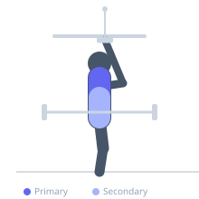
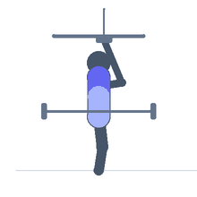

Exercise guide / Cable Shrug
Cable Shrug
The cable shrug is a trapezius isolation exercise using a low-pulley cable, which provides constant tension throughout the range of motion unlike a barbell or dumbbell shrug. The cable angle also allows a slight forward lean that can increase the stretch on the upper trapezius at the bottom of the movement, potentially improving hypertrophy stimulus.
Primary muscles
trapezius upper
Secondary muscles
trapezius middle
longissimus
Stabilizers
flexor carpi radialis
Equipment
Cable Machine (Low Pulley)
Optional
Lifting Straps


Starting position
- Stand facing a low-pulley cable machine. Attach a straight bar or rope. Grasp the attachment and step back so the cable pulls the arms slightly forward with arms hanging at the sides.
Setup
- Attach a straight bar to the low pulley. Stand close enough to maintain slight cable tension at the bottom of the shrug. Use a shoulder-width overhand grip.
Steps
- Step 1: Begin standing with arms extended at the sides, allowing the upper traps to stretch slightly downward with the cable pulling forward.
- Step 2: Elevate the shoulders straight up toward the ears without bending the elbows.
- Step 3: Hold the top position for 1–2 seconds, fully contracting the upper trapezius.
- Step 4: Lower the shoulders slowly back to the starting position, allowing a full stretch.
- Step 5: Repeat without rolling the shoulders or rotating through the movement.
Coaching cues
- Try to touch your shoulders to your ears
- Keep the arms straight — elbows locked
- Move only the shoulders — nothing else moves
Breathing
- Exhale as you shrug up. Inhale as you lower.
Range of motion
- Full depression of shoulders at the bottom to maximum elevation at the top.
Tempo
- 1-2-2-0 (1s up, 2s hold, 2s down)
Common mistakes
- Rolling the shoulders forward or backward — shrug strictly vertically
- Bending the elbows to assist the movement
- Using a quick bouncing motion without achieving a full contraction at the top
Safety
- Avoid excessive loading that causes cervical spine compression
- Do not roll the shoulders — this adds no benefit and may stress the AC joint
Training
- hypertrophy: 10–15 reps
- endurance: 15–25 reps
- hypertrophy: 3–4 sets
- endurance: 2–3 sets
- Rest: {'hypertrophy': 60, 'endurance': 30}